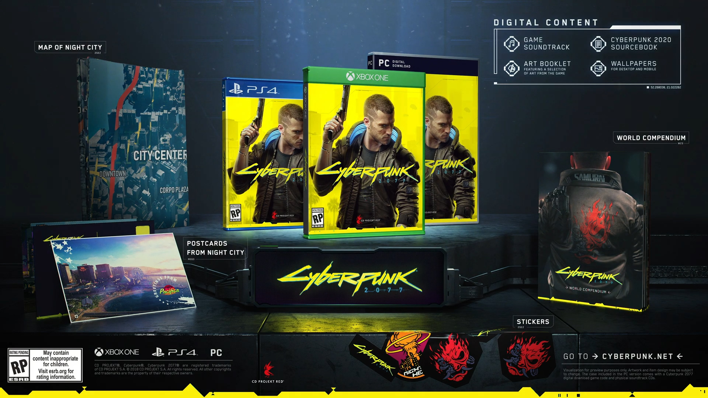
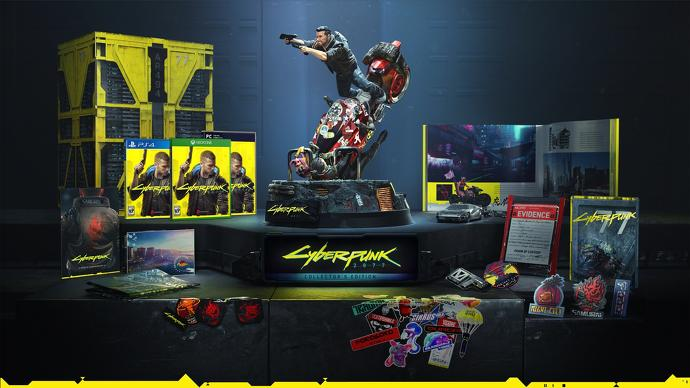

April 16th, 2020

Standard Edition
- Base Game
- Art Booklet
- Official Soundtrack
- Cyberpunk 2077 Sourcebook
- Night City Postcards
- World Compendium
- Stickers
- Map of Night City

Collector's Edition
- Base Game
- Hardcover Art Book
- Official Soundtrack
- Collectible Steelbook
- Cyberpunk 2020 Sourcebook
- 10-inch Vinyl Statue
- Pin Set
- Metal Keychain
- A Visitor's Guide to Night City inside NCPD Evidence Bag
- Embroidered Patches
- World Compendium
- Night City Postcards
- Map of Night City
- Stickers
- Collector's Edition Box